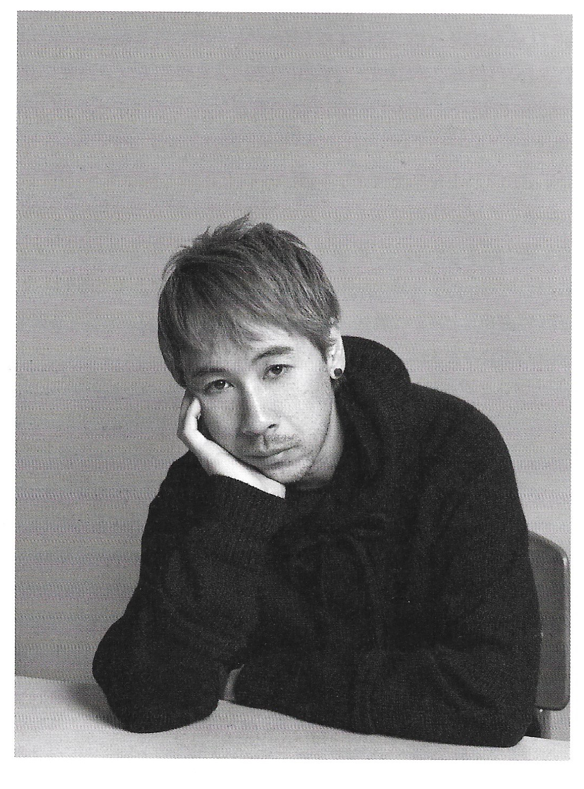

About Undercover
Undercover is one of the most successful Japanese clothing ventures of all time. Through the near 30 years of evolution, Undercover has only solidified its position in the global fashion scene. Inspired by the 1980s American punk-rock revolution, Jun Takahashi uses Undercover as a way to express his youth-time influences.
Jun Takahashi, 25th Anniversary Portrait
Taking inspiration and guidance from many of his Japanese designer peers, Takahashi has crafted a brand with a cult-like following. Fans of Undercover widely regard the early-to-mid 00s as Takahashi’s best work.
The growing popularity of Undercover over the past several years largely credited to the rise in popularity of archive fashion. Because of social media platforms, archive fashion has been able to blossom into a wildly popular sector of menswear. Along with other legends like Raf Simons, Maison Margiela, Helmut Lang, and Rei Kawakubo, Takahashi’s work has seen a resurgence in popularity due to consumers wanting to own pieces of fashion history.
As Undercover becomes more mainstream, brand collaborations allow Undercover to be placed on the radars of otherwise untapped consumers. Notable Undercover collaborations include Nike and Supreme. The ongoing Nike collection consists of running apparel and sneakers. The more popular collaboration is with Supreme, due to Supreme being the undisputed most popular streetwear brand of all time. Starting in Spring/Summer 2015, the Supreme Undercover collaboration combines the edgy grunge attitudes of both brands (Rotman).
Back to Top